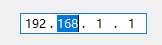

QCtmIPAddressEdit Class
IPv4 输入框. More...
| Header: | #include <QCtmIPAddressEdit.h> |
| Inherits: | QWidget |
Properties
- readOnly : bool
Public Functions
| QCtmIPAddressEdit(QWidget *parent) | |
| virtual | ~QCtmIPAddressEdit() |
| QString | ipAddress() const |
| bool | isReadOnly() const |
| void | setIPAddress(const QString &ip) |
| void | setReadOnly(bool ro) |
Signals
| void | editChanged() |
| void | editingFinished() |
Reimplemented Protected Functions
| virtual bool | event(QEvent *event) override |
| virtual void | focusInEvent(QFocusEvent *event) override |
| virtual void | focusOutEvent(QFocusEvent *event) override |
| virtual void | inputMethodEvent(QInputMethodEvent *e) override |
| virtual void | keyPressEvent(QKeyEvent *event) override |
| virtual QSize | minimumSizeHint() const override |
| virtual void | mouseDoubleClickEvent(QMouseEvent *event) override |
| virtual void | mouseMoveEvent(QMouseEvent *event) override |
| virtual void | mousePressEvent(QMouseEvent *event) override |
| virtual void | mouseReleaseEvent(QMouseEvent *event) override |
| virtual void | paintEvent(QPaintEvent *event) override |
| virtual QSize | sizeHint() const override |
Detailed Description
截图:

Property Documentation
readOnly : bool
输入框是否只读.
Access functions:
| bool | isReadOnly() const |
| void | setReadOnly(bool ro) |
Member Function Documentation
QCtmIPAddressEdit::QCtmIPAddressEdit(QWidget *parent)
构造函数 parent.
[signal] void QCtmIPAddressEdit::editChanged()
当文本变化时发送该信号.
[signal] void QCtmIPAddressEdit::editingFinished()
编辑完成时发送该信号.
[virtual] QCtmIPAddressEdit::~QCtmIPAddressEdit()
析构函数.
[override virtual protected] bool QCtmIPAddressEdit::event(QEvent *event)
Reimplements: QObject::event(QEvent *e).
[override virtual protected] void QCtmIPAddressEdit::focusInEvent(QFocusEvent *event)
[override virtual protected] void QCtmIPAddressEdit::focusOutEvent(QFocusEvent *event)
[override virtual protected] void QCtmIPAddressEdit::inputMethodEvent(QInputMethodEvent *e)
QString QCtmIPAddressEdit::ipAddress() const
返回IP地址.
Note: Getter function for property ipAddress.
See also setIPAddress.
bool QCtmIPAddressEdit::isReadOnly() const
返回是否只读.
Note: Getter function for property readOnly.
See also setReadOnly.
[override virtual protected] void QCtmIPAddressEdit::keyPressEvent(QKeyEvent *event)
[override virtual protected] QSize QCtmIPAddressEdit::minimumSizeHint() const
[override virtual protected] void QCtmIPAddressEdit::mouseDoubleClickEvent(QMouseEvent *event)
[override virtual protected] void QCtmIPAddressEdit::mouseMoveEvent(QMouseEvent *event)
[override virtual protected] void QCtmIPAddressEdit::mousePressEvent(QMouseEvent *event)
[override virtual protected] void QCtmIPAddressEdit::mouseReleaseEvent(QMouseEvent *event)
[override virtual protected] void QCtmIPAddressEdit::paintEvent(QPaintEvent *event)
void QCtmIPAddressEdit::setIPAddress(const QString &ip)
设置 ip 地址.
Note: Setter function for property ipAddress.
See also ipAddress().
void QCtmIPAddressEdit::setReadOnly(bool ro)
设置是否只读 ro.
Note: Setter function for property readOnly.
See also isReadOnly().